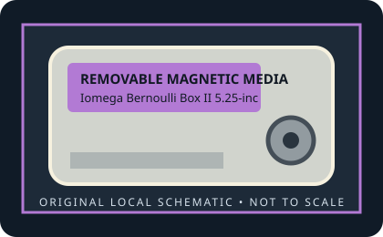

[ REMOVABLE MEDIA // MODEL-SPECIFIC RECORD ]
Iomega Bernoulli Box II 5.25-inch 230 MB Cartridge
Late-capacity Bernoulli Box II, 5.25-inch cartridge generation; the Box II family ran from 1987 into the mid-1990s. 230 MB nominal removable magnetic-disk capacity, the maximum capacity documented for the 5.25-inch Box II family.

IDENTIFICATION: Verify the exact capacity, physical format, and generation printed on the medium. A cartridge has no host interface of its own; drive interface and system support must be checked against the exact reader model.
Format, capacity and compatibility
| Product / media model | Iomega Bernoulli Box II 5.25-inch 230 MB Cartridge |
|---|---|
| Generation / format | Late-capacity Bernoulli Box II, 5.25-inch cartridge generation; the Box II family ran from 1987 into the mid-1990s. |
| Capacity and medium | 230 MB nominal removable magnetic-disk capacity, the maximum capacity documented for the 5.25-inch Box II family. |
| Media and drive interface | Cartridge has no electrical connector. The compatible external Box II drive uses SCSI; internal drive connection is model/controller-specific. |
| Compatibility | Requires a late Bernoulli Box II drive that explicitly supports 230 MB cartridges. The medium has no electrical interface; external Box II drives use SCSI, and internal units require their matching controller/interface. Do not assume earlier 20 MB Box II drives can use the 230 MB generation. |
| Version and model caveat | The 230 MB cartridge is a later Box II generation, physically distinct from the original 8-inch Bernoulli media and not an ordinary floppy disk. |
Handling and preservation
Keep the cartridge in its protective case, away from dust, moisture, heat, strong magnetic fields, and physical shock. Do not open a sealed cartridge or force it into a drive. For preservation, image read-only with a known-compatible mechanism, retain the source media, record the drive/interface used, and verify copied data with checksums.
- Photograph the label and shell before use; preserve packaging, write-protect state, and acquisition notes.
- Keep at least two independent verified copies of important data. A legacy removable cartridge by itself is not an archival strategy.
Model and generation notes
The 230 MB cartridge is a later Box II generation, physically distinct from the original 8-inch Bernoulli media and not an ordinary floppy disk.
Storage capacity names and drive interface names describe different things: confirm the cartridge format/generation first, then check the exact reader model, host connector, controller, operating-system driver, and filesystem separately.
Sources and standards
- Museum of Obsolete Media — Iomega Bernoulli disk, 5.25-inchDocuments the Box II range up to 230 MB and its 5.25-inch cartridge format.
- InfoWorld, November 1987, p. 133 — Bernoulli Box II (Google Books)Contemporary source for the 5.25-inch Box II family; the 230 MB model came later in that family.
- Internet Archive — Bernoulli 230 MB documentation searchSearches period and archived documentation for late-generation 230 MB cartridges and drives.
Discontinued-media specifications are cross-checked against period product material and museum/archive documentation. Family-level history does not replace the exact drive manual for interchangeability.